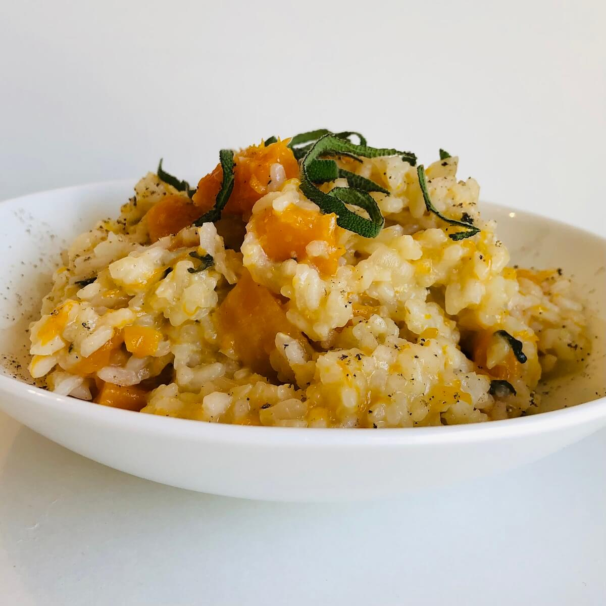

Risotto Recipe

Description
This vegan butternut squash risotto is easy to make, filling, and delicious. It's perfect as a gluten-free,
vegan main course or side dish for the holidays or whenever you're in the mood for a special meal
Ingredients
- 3 cups water
- 3 cups peeled and chopped raw butternut squash
- 1 1/2 cups Arborio rice
- 1 cup chopped onions
- 1 cup vegan dry white wine (or substitute low sodium, gluten-free vegetable stock)
- 1 tablespoon extra virgin olive oil
- 1 tablespoon chopped fresh sage leaves
- 1 tablespoon finely chopped garlic
- 1 teaspoon salt (or to taste)
- 1/4 teaspoon black pepper (or to taste)
Optional toppings:
- A sprinkle of toasted pine nuts, chopped pecans, nutritional yeast, finely chopped fresh sage, and/or
parsley.
Steps
- Add the olive oil to a large pot on the stove set to low-medium heat.
- Add the chopped onions, garlic, and sage, then cook, stirring occasionally, for 3-4 minutes or until the
onions have softened and look translucent.
- Stir in the Arborio rice and cook for 1 minute to toast the grains slightly.
- Add the chopped butternut squash, water, white wine, salt, and pepper, then cook, uncovered, for 26-28
minutes or until the rice is cooked to al dente and the butternut squash is fork tender.
- Stir, then sprinkle on any optional toppings if desired.
Notes
- Store this vegan butternut squash risotto in an airtight container in the fridge for up to four days.
Index